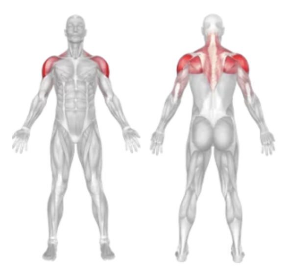
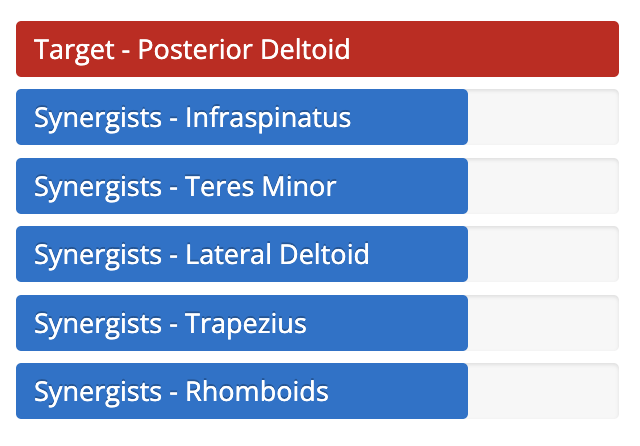

Setup
- Adjust the machine so the handles are set at the front, and the seat is at a height that aligns your shoulders with the handles.
- Sit on the machine facing the pad (chest against the pad), with feet flat on the floor.
- Grasp the handles with a neutral or pronated grip, arms extended but with a slight bend in the elbows.
- Keep your chest firmly pressed against the pad and engage your core.
- Relax your neck and keep your spine neutral throughout the movement.
Execution
- Pull Back: Exhale and move the handles outward and backward in an arc motion by squeezing your shoulder blades together.
- Hold: Pause briefly at the end of the movement when your arms are extended straight to the sides.
- Return: Inhale and slowly bring the handles back to the starting position with control.
Tips for Effectiveness
- No Momentum: Avoid jerking or swinging the weight—keep a slow, controlled motion.
- Shoulder Height: Make sure the seat height allows your shoulders to stay in line with the handles.
- Focus on Rear Delts: Concentrate on moving with your rear shoulder muscles, not your arms.
- Keep Elbows Slightly Bent: Don’t lock out your elbows during the movement.
Benefits of Back Fly Machine
- Rear Delt Development: Isolates and strengthens the rear deltoid muscles effectively.
- Improved Posture: Helps correct rounded shoulders and supports better upper-body posture.
- Scapular Stability: Strengthens the muscles around the shoulder blades.
- Safer Alternative: Provides support and controlled resistance, reducing injury risk compared to free weights.
Muscles Worked in Back Fly Machine

